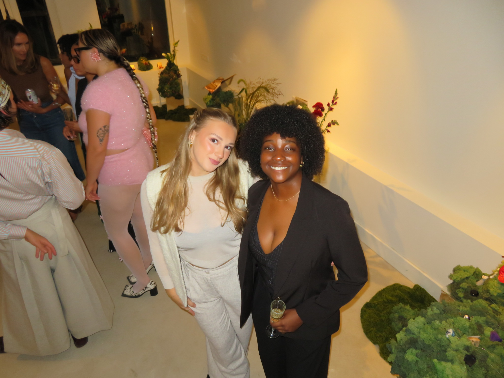
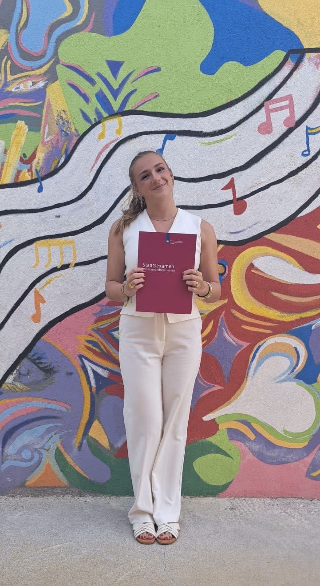

Een plek voor reflectie, groei en wekelijkse updates.
Tijdens mijn werkplekleren deel ik mijn ervaringen, opdrachten en persoonlijke groei. Mijn ervaringen bij Avenue Real Estate staan per week op deze pagina.


Mijn weken bij Avenue.
Een kijkje achter de schermen van mijn stage bij Avenue Real Estate in Antwerpen. Van nieuwe taken tot de momenten die mijn eerste ervaringen vormgeven.
Mijn eerste week bij Avenue Real Estate
Een warm welkom, kennismaken met de organisatie, meewerken aan de nieuwe website en content maken tijdens een event op kantoor.
Lees mijn eerste blogpost →Stage bij Avenue Real Estate – Week 2
Mijn tweede stageweek bij Avenue stond vooral in het teken van het verder afwerken van de nieuwe website en het volledig uitwerken van een Instagram-reel in Canva over het event van Stad Antwerpen dat de week ervoor op kantoor plaatsvond.
Lees Week 2 →Stage bij Avenue Real Estate – Week 3
Mijn derde stageweek bij Avenue Real Estate zit er alweer op! Deze week stond vooral in het teken van de laatste voorbereidingen voor de lancering van de nieuwe website van Avenue. Daarnaast heb ik gewerkt aan het schrijven van nieuwe content, het verbeteren van de SEO en het controleren van de laatste details. Het was een drukke week, maar ik heb opnieuw veel kunnen bijleren.
Lees Week 3 →Stage bij Avenue Real Estate – Week 4
Mijn vierde stageweek bij Avenue is weer voorbijgevlogen. Deze week was heel afwisselend, want naast het verder aanvullen van de nieuwe website kreeg ik ook de kans om aan enkele nieuwe en creatievere projecten te werken. Zo was ik bezig met het ontwikkelen van nieuwe marketingconcepten, het ontwerpen van pandfiches en het onderzoeken van mogelijkheden rond AI en automatisering.
Lees Week 4 →Nieuwe updates volgen tijdens mijn stage.
Wat hierna komt.
Ook mijn tweede werkplekervaring zal hier later een eigen reeks blogposts krijgen, met wekelijkse updates en reflecties.